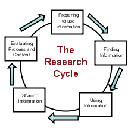

Graphic Organizers
Students who use concept maps in their search process were more likely to make metagcognitive judgments that lead to successful searching. (Carol Gordon)
 Graphic organizers are important tools to help students see how key ideas connect with each other and to organize data into categories.
Graphic organizers are important tools to help students see how key ideas connect with each other and to organize data into categories.
A graphic organizer or mindmap is usually a one-page
form with blank areas for the student to fill in with related ideas and information. Some organizers are very specific; others can be used with many topics. Some of the organizers allow for the information to be written or drawn, allowing students in all grade to use them.
Miguel MGuhlin noted in a blog post how graphic organizers can be used in all stages of finding using and sharing information.
In the preparing phase of the problem-solving or research process graphic organizers can be used to:
|
plan out the problem-solving or research process |
Chain of events Map |
|
idenify prolbem causes and interrelationships between them |
Fishbone Mapping |
| show interactions between events | Cycle |
| explore a topic and identify main ideas and details | Spider Map |
| to identify a problem and consider multiple solutions and possible results |
Problem/Solutio |
Teaching Tip: Jim Burke on using graphic organizers
Get more graphic organizers from EdHelper.com
Technology-based tools for graphic organizers and mind-mapping:
There are many computer tools that allow students to create concept and mind maps. Inspiration and Kidspiration are two of the better known tools. As well, there is a growing number of free open-source and web-based tools available. These tools run on your web browser therefore there is no need to download any additional software.
A very simple tool, ReadWriteThink Webbing Tool l, is perfect to engage younger students (grades 3 - 5) in the mind-mapping and webbing process.
Bubbl.us is a simple and free web application that lets you brainstorm online.
Gliffy is an online, collaborative mindmapping tool that is simple to use. Features such as copy,paste and undo are all a part of this advanced web application.
Mindomo is also a free web-base mind mapping tool offering the capabilities of desktop mind mapping software in a Web browser - with no complex software to install or maintain. It's also a whole lot of fun to use!
All of these tools allow you to save your work online or to your desktop, share and work collaboratively on a document with others, and post your images to blogs or wikis.
Concept Maps
Concept maps differ from mindmaps in that they have a specific set of criteria which are used to link concepts. They are more rigid in their structure than free flowing mindmaps but are excellent tools for students to see how the information they are collecting links together. Concept maps are graphical tools for organizing and representing knowledge. They include concepts, usually enclosed in circles or boxes of some type, and relationships between concepts indicated by a connecting line linking two concepts. Words on the line, referred to as linking words or linking phrases, specify the relationship between the two concepts. (The Theory Underlying Concept Maps and How to Construct Them )
The attached document (doc), Skill: The Process of Concept Mapping, outlines the steps in creating a concept map for a Native Studies 30 assignment. The following free desktop programs are useful tools for meeting the concept mapping skill of the Saskatchewan Social Science curriculum objectives.

Freemind allows you to create a mapped image with links to a folding outline.
CMap creates structured linking concept maps.
More about concept maps:
An Introduction to Concept Maps:
- Tips on Making Your Own Concept Maps.
- Kinds of Concept Maps.
- Concept Map Bank.
Concept Maps go to School "We would like to use tools and a methodology that helps children construct knowledge," Tarte said. "Concept maps was the best tool that we found."
Concept Map Wiki - explanation, definitions, types of concept maps, application and reference links - a great resource for everything about concept maps.